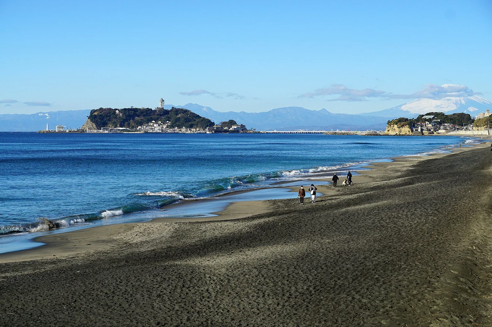

Shonan — Kamakura
Japon · surf

Plage de surf populaire près de Tokyo, avec des vagues douces et une grande communauté.
- Lieu
- Japon
- Niveau
- Débutant
- Activités
- surf
- Type d'eau
- Mer / océan
- Coordonnées
- 35.31, 139.48 (position approximative du secteur)
Dangers à connaître
- Très fréquenté.
- Vagues parfois molles.
Le conseil d'Ocean Buddy
Spot d’initiation animé près de Tokyo ; le mont Fuji en toile de fond par temps clair.
Ouvrir dans Ocean Buddy Télécharger sur l'App Store
Source : Description historique Ocean Buddy · vérification externe en attente.